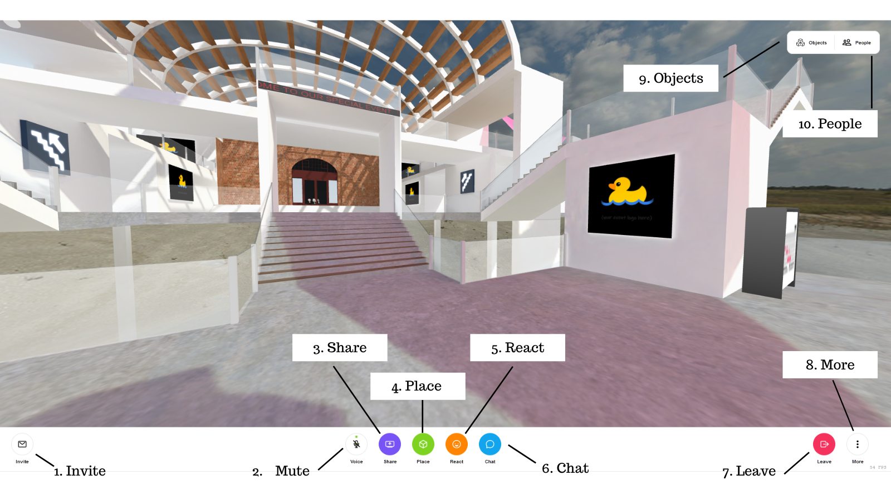

Hubs 특징들 살펴보기

User Interface
Invite: 친구와 룸 공유에 대한 정보가 들어 있는 대화상자를 엽니다. 자세한 내용은 이 페이지 하단의 초대 메뉴 섹션에 나와 있습니다.
Mute: 마이크를 켜거나 끕니다.
Share: 룸 구성원과 데스크톱, 웹캠 또는 전화 카메라를 공유할 수 있습니다. 공유 미디어가 룸에 비디오처럼 나타납니다. 이 버튼을 다시 클릭하거나 object menu를 사용하여 미디어를 제거합니다.
Place: 검사실로 가져올 수 있는 미디어를 찾기 위한 검색 도구를 엽니다. 3D 모델, 장면, 아바타 및 GIF 중에서 선택하거나 이미지, 비디오, 모델 또는 장면의 URL 또는 파일을 제공합니다. 아래에는 배치할 수 있는 추가 개체가 나열되어 있습니다.
Pen: 3D 공간을 그릴 수 있습니다. 펜의 크기와 색상을 변경하고(HubsControls(.hubs-controls.html) 강조 표시를 취소한 후 도면에서 3D 모델을 생성할 수 있습니다([.hubs-features.html#drawing-menu 참조).
Camera: 룸의 사진과 비디오를 찍은 후 객실로 추가할 수 있는 카메라 객체를 만듭니다. 사진이나 동영상을 촬영하면 채팅에도 링크가 나타납니다. 카메라 개체를 제거하려면 카메라 버튼을 다시 클릭합니다.
React: 룸에 생성할 이모지를 선택할 수 있는 메뉴를 엽니다.
Chat: 텍스트 채팅을 통해 통신하거나 객체를 만들거나 명령을 입력할 수 있습니다. 명령은 다음과 같습니다.
/leave - Disconnect from the room.
/grow - Increase your avatar's size.
/shrink - Decrease your avatar's size.
/duck - Create a duck object.
/debug - Toggle physics debug rendering.
/vrstats - Toggle stats in VR.
/scene <scene url> - Change the scene (moderators only).
/rename <new name> - Rename the room (moderators only).
/audiomode - Toggle left-right spatialization, but keep distance-based attenuation (experimental).
/audioNormalization <factor> - Equalize audio levels (experimental)
/fly - Toggle fly mode.
Leave: 속해 있는 방에서 떠나고 싶을 때
More: 패널을 열어 사용 가능한 추가 명령을 표시합니다. 이 메뉴에서 룸을 즐겨찾고, 사용자 환경설정을 수정하고, 도움말에 액세스하고, 기타 설정을 지정할 수 있습니다. 룸 소유자인 경우 이 메뉴에는 룸 권한 및 현재 장면과 관련된 설정도 포함됩니다.
Objects: 룸에 있는 미디어 항목의 목록을 표시합니다. 추가 옵션을 보려면 목록에서 개체를 클릭하십시오.
People: 룸 및 로비에 있는 사용자에 대한 정보를 표시합니다. 룸 구성원 수, 이름 및 장치 유형을 표시합니다. 이 목록에서 고급 사용자 컨트롤에 액세스할 수도 있습니다.
Menus
객실 객체와 아바타에는 고유의 메뉴가 있습니다. 바탕 화면 컴퓨터에 표시하려면 커서를 개체 위에 놓고 스페이스바(또는 탭)를 누릅니다. VR 장치의 경우 문서의 Control 섹션을 참조하십시오.
Object Menu

- Pin: 나갈 때 객체가 방안에 머물도록 합니다. 기본적으로 객체는 작성자가 종료할 때 사라집니다.
- Target: 객체의 초점이 맞춰진 뷰를 엽니다. 이 메뉴 항목은 미디어 개체에 대해 제공됩니다.
- Resize: 개체 크기를 조정합니다.
- Open link: 새 브라우저 탭에서 개체의 URL을 엽니다.
- Trash: 씬(scene)에서 객체를 제거합니다.
- Gravity: 물체를 바닥에 떨어뜨립니다.
- Clone: 개체를 복제합니다.
- Rotate: 개체를 회전합니다.
- Magnify: 뷰에서 객체의 뷰를 낮게 표시합니다. 미디어 개체에 대해 이 메뉴 항목(표시되지 않음)이 있습니다.
- Convert to drawing: 객체를 드로잉으로 다시 변환합니다. 개체가 드로잉에서 시작된 경우 이 메뉴 항목(표시되지 않음)이 있습니다.
Avatar Menu

- Volume: 사용자 오디오 볼륨을 변경합니다. (룸에 있는 다른 사람의 볼륨에는 영향을 주지 않습니다.)
- Hide: 사용자의 아바타 및 오디오를 숨깁니다. 이것은 현재 세션에만 적용되며, 새로 고치면 해당 세션만 다시 표시됩니다. 다른 룸 구성원은 여전히 사용자를 보고 들을 수 있습니다.
- Mute: 사용자의 마이크를 음소거하여 더 이상 룸의 다른 사용자가 듣지 못하도록 합니다. (진행자만 해당)
- Kick: 사용자를 일시적으로 룸에서 뺍니다(진행자만 해당).
Camera Menus

- Photo: 정지 이미지를 찍은 다음 객체로 룸에 추가합니다.
- Video: 비디오를 녹화한 후 객체로 룸에 추가합니다. 화살표를 사용하여 기록 길이를 조정합니다. 비디오 녹화는 브라우저 저장소에 임시로 저장됩니다. 브라우저의 공간이 부족하면 진행 중인 녹화가 손실될 수 있습니다. 이벤트를 기록하려면 OBS)과 같은 화면 기록 도구를 사용하는 것이 좋습니다.
- Mute Video: 오디오가 비디오에 포함되는지 여부를 제어합니다.
- Recenter: Reorients the camera to face you.
- Trash: Scene으로부터 카메라를 제거합니다..
- Rotate: 카메라를 회전합니다.
- Object Focus: Reorients the camera to face the object or user.
- Object Track: Makes the camera rotate to follow the object or user.
Drawing Menu

- Create: 도면을 3D 객체로 만듭니다.
- Undo: 마지막 스트로크를 제거합니다.
- Trash 씬(scene)에서 도면을 제거합니다.
Video Controls
커서를 비디오 위에 가져가면 비디오 컨트롤이 표시됩니다.

- Screencapture: 비디오의 스크린샷을 만든 다음 객체로 룸에 추가합니다.
- Volume: 오디오 재생 볼륨을 변경합니다(룸에 있는 다른 사용자의 볼륨에는 영향을 주지 않음).
- Play/Pause: 비디오를 재생/일시 중지합니다.
- Time Controls: 비디오에서 앞뒤로 점프합니다.
Emoji Spawners
객체 또는 아바타 메뉴를 표시할 때 이모지 생성기 메뉴가 표시됩니다.

이모지 메뉴를 사용하면 흔들면 입자가 방출되는 움켜쥘 수 있는 이모지를 생성할 수 있습니다. 이모티콘을 놓으면 몇 초 후에 지워집니다.
Invite Menu
"초대" 단추를 누르면 다른 사용자와 룸을 공유하는 데 필요한 정보가 포함된 대화상자가 열리고, 다른 사용자가 룸에 참여할 수 있습니다.

hub.link URL을 복사 또는 공유하거나 숫자 코드를 사용하여 구두로 링크를 공유할 수 있습니다. 숫자 코드는 72시간 후에 만료됩니다.
iframe(iframe) HTML 코드(방 사용 권한이 있는 경우 표시)를 사용하여 웹 페이지에 방을 포함할 수 있습니다.